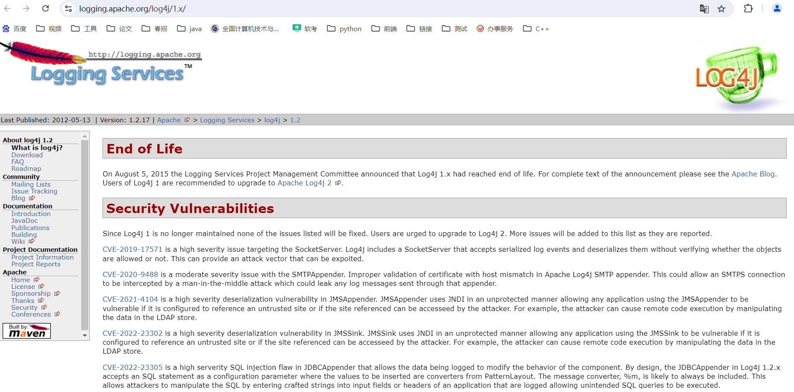
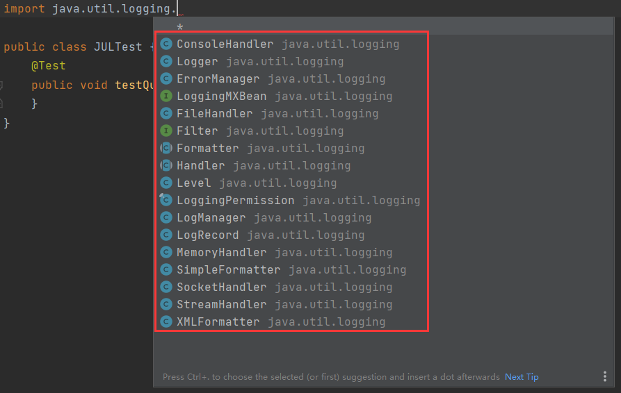
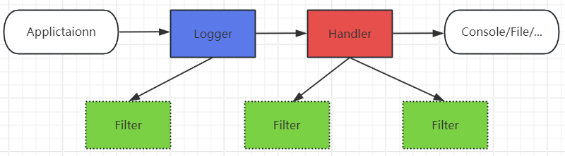
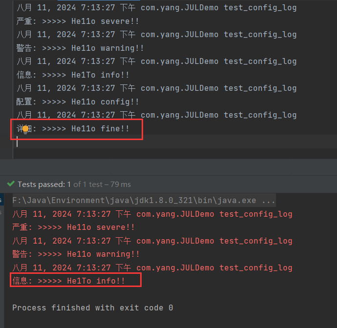
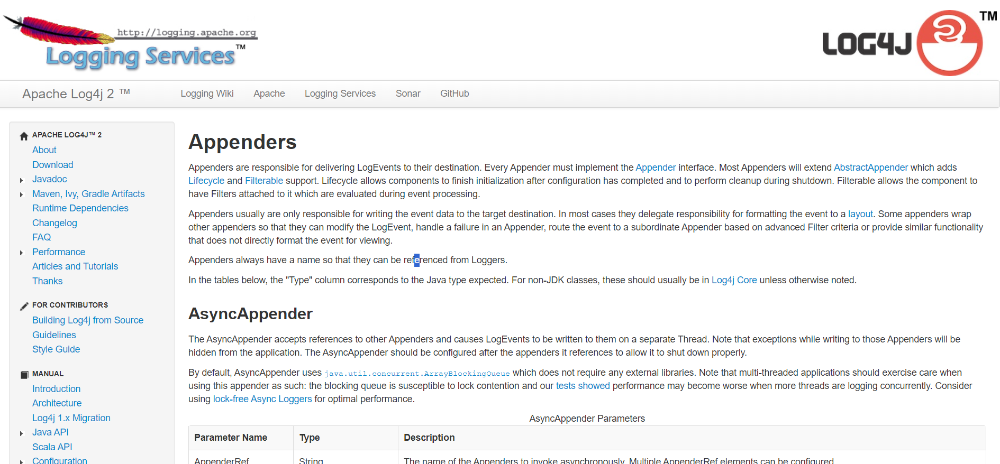

1.日志门面和日志框架
1.1 日志门面
- Java日志门面(日志抽象层)是一种抽象层，它为不同的日志实现提供一致的API。这使得更改日志实现变得容易，因为代码库可以在不修改的情况下工作（门面模式）
- Java日志门面的作用主要是面向接口开发，提供一种标准的方式来记录日志
- 开发人员可以使用统一的接口来管理和记录应用程序的日志信息，而不必关心底层日志框架的具体实现细节
- 通过使用日志门面，可以更容易地切换不同的日志框架
- 常见的日志门面 ：slf4j、JCL
1.2 日志框架
- 常见的日志框架：JUL、Logback、log4j2、log4j2
- 出现顺序 ：log4j –>JUL–>JCL–> slf4j –> logback –> log4j2
- 业务代码（开发人员）调用日志门面日志门面调用具体的日志框架
- 日志门面仅提供通用的日志 API 给业务代码（开发人员），不包括每个日志框架的配置。因此在使用时，还是需要添加使用的具体的日志框架的配置文件
2.日志门面
2.1 JCL
2.2 slf4j
3.日志框架
3.1 log4j
官网：https://logging.apache.org/log4j/1.x/

Log4j 很重要的一个缺陷是不支持占位符，但是用户可自己定义实现占位符的功能
Log4j是Apache下的一款开源日志框架，通过使用Log4j，可以控制日志信息输出到控制台、文件、甚至是数据库中
可以控制每条日志的输出格式，通过定义日志的输出级别，可以更灵活的控制日志的输出过程，方便项目调试
可以通过一个配置文件来灵活的进行配置，而不需要修改应用的代码
3.1.1 组成
- Log4j主要由三大组件组成：Loggers（日志记录器）、Appenders（输出控制器）和Layout（日志格式化器）
- Loggers：负责收集和处理日志记录，实例的命名通常采用类的全限定名。Logger的名字大小写敏感，并且具有继承机制。例如，名为
com.bjpowernode.log4j的Logger会继承名为com.bjpowernode的Logger的配置。Log4j中还有一个特殊的Logger叫做“root”，它是所有Logger的根，其他所有的Logger都会直接或间接地继承自root - Appenders：指定日志的输 出方式，可以是输出到控制台、文件等。Appenders决定了日志信息应该如何和在哪里被记录。通过配置不同的Appender，可以控制日志信息的输出目的地
- Layout：控制日志信息的输出格式。Layout定义了日志信息的展示方式，包括日期、时间、级别、消息内容等的格式化输出
- Loggers：负责收集和处理日志记录，实例的命名通常采用类的全限定名。Logger的名字大小写敏感，并且具有继承机制。例如，名为
3.1.1.1 Logger
3.1.1.2 Appenders
- Appender 用来指定日志输出到哪个地方，可以同时指定日志的输出目的地
| 输出端类型 | 作用 |
|---|---|
| ConsoleAppender | 将日志输出到控制台 |
| FileAppender | 将日志输出到文件中 |
| DailyRollingFileAppender | 将日志输出到一个日志文件，并且每天输出到一个新的文件 |
| RollingFileAppender | 将日志信息输出到一个日志文件，并且指定文件的尺寸，当文件大小达到指定 尺寸时，会自动把文件改名，同时产生一个新的文件 |
| JDBCAppender | 把日志信息保存到数据库中 |
3.1.1.3 Layout
3.1.2 快速入门
1.导入依赖
1 | <dependencies> |
2.Log4jDemo.java
1 | import org.apache.log4j.BasicConfigurator; |
3.1.3 日志级别
Log4j提供了八个日志级别，这些级别按照严重程度从高到低排列，具体如下：
- OFF：最高等级，关闭所有日志记录
- FATAL：非常严重的错误事件，可能导致应用程序崩溃
- ERROR：错误事件，可能允许应用程序继续运行
- WARN：警告级别，表示程序运行出现了一些不正常的情况，但不会导致程序终止或中断
- INFO：一般程序运行信息，如程序启动和结束信息、关键操作的成功或失败等
- DEBUG：调试信息，用于追踪程序的执行流程和状态
- TRACE：最低级别，用于最详细的日志记录，通常用于跟踪问题和排查bug
- ALL：最低等级，打开所有日志记录
3.1.4 配置文件
1 | ``` |

3.2.1 JUL架构

- Application：java应用程序
- Logger：日志记录器（在框架中就是一个类），应用程序通过获取Logger对象，调用其API来发布日志信息。Logger通常是应用程序访问日志系统的入口程序
- Appender：也被称为Handler，每一个Logger都会关联一组Handler，Logger会将日志交给关联的Handler处理，由Handler将日志处理到响应的输出设备（如负责控制台的Handler会将日志输出到控制台，负责文件的Handler会将日志输出到文件，还有网络、日志服务器等其他的位置）
- Layout：也被称为Formatter，主要负责对日志的格式进行排布，可以通过具体的参数来自定义日志的表现格式
- Level：每一条日志消息都会有其日志级别，该级别标识了这条日志的重要程度。可以关联Level和Logger、Appender，便于过滤日志消息
- Filter：过滤器，根据需要可以定制哪些信息被记录（ACCEPT），哪些信息被放过（DENY）
总结：
1.用户使用Logger进行日志记录，Logger持有若干个Handler，日志的输出操作由Handler完成
2.在Handler输出日志之前，会经过Filter过滤，判断哪些日志级别过滤放行和拦截
3.Handler会将日志输出到指定位置：日志文件、控制台、… …
4.Handler在输出日志时会使用Layout，将输出内容排版
3.2.2 日志分级
- 将日志信息进行分级管理，便可方便的控制信息输出内容及输出位置：哪些信息需要输出，哪些信息不需要输出，只需在一个日志输出控制文件中稍加修改即可。而代码中的输出语句不用做任何修改
- 代码中的日志编写，其实就是写大量的输出语句。只不过，这些输出语句比较特殊，它们具有级别，在程序运行期间不定被执行。它们的执行是由另一个控制文件控制
- JUL的日志级别包括：
- SEVERE：表示严重错误，程序可能无法继续运行
- WARNING：表示可能出现了一些问题，但程序可能还能继续运行
- INFO：提供了一些重要的信息，通常用于监控程序的运行状态
- CONFIG：通常用于配置信息，帮助管理员了解系统的配置情况
- FINE：提供了详细的调试信息，用于开发和调试阶段
- FINER：比FINE更详细的调试信息，通常用于开发过程中的调试
- FINEST：最详细的调试信息，通常只在开发和测试阶段使用
- JUL还有2个特殊的日志级别：
- OFF：用来关闭日志记录
- ALL：用来启用所有日志的记录
1 | import org.junit.Test; |
3.2.3 Logger父子继承关系
- 在JUL 中，Logger 有父子继承关系概念，会根据 Logger 对象的名称的包含关系，划分父子继承关系。对于某个 Logger 对象，如果找不到显性创建的父 Logger 对象，那么它的父 Logger 是根 Logger，即 RootLogger
- 子 Logger 对象会继承父Logger 的配置，例如日志级别，关联的 Handler，日志格式等等
- 对于任何 Logger 对象，如果没对其做特殊配置，那么它最终都会继承 RootLogger 的配置
1 |
|
3.2.4 日志配置
- 过2种方式调整JUL默认的日志行为(设置日志级别，日志输出目的地日志格式等等)
- 一种是通过在程序中硬编码形式(不推荐)
- 另一种是通过单独的配置文件形式
3.2.4.1 java代码日志配置
在JUL中，Logger 是有父子继承关系的，所以当对某一个 Logger 对象进行单独的配置时，需要将它设置为不继承使用父Logger 的配置
1
2
3
4
5
6
7
8
9
10
11
12
13
14
15
16
17
18
19
20
21
22
23
24
25
26
27
28
29
30
31
32
33
34
35
36
37
38
39//java代码日志配置
public void test_config_log(){
//获取日志记录器对象
Logger logger = Logger.getLogger("com.yang.JULDemo");
//关闭默认配置，即不再使用父Logger的handler配置
logger.setUseParentHandlers(false);
//设置日志记录器的级别为all
logger.setLevel(Level.ALL);
//日志记录格式，使用简单格式转换对象
SimpleFormatter simpleFormatter = new SimpleFormatter();
// 控制台输出Handler,并且设置日志级别为INFO，日志记录格式
ConsoleHandler consoleHandler = new ConsoleHandler();
consoleHandler.setLevel(Level.INFO);
consoleHandler.setFormatter(simpleFormatter);
// 文件输出Handler,并且设置日志级别为FINE，日志记录格式
FileHandler fileHandler = new FileHandler("./javaConfig.log");
fileHandler.setLevel(Level.FINE);
fileHandler.setFormatter(simpleFormatter);
// 记录器关联处理器，即此logger对象的日志信息输出到这两个Handler进行处理
logger.addHandler(consoleHandler);
logger.addHandler(fileHandler);
// 日志记录输出
logger.severe(">>>>> He11o severe!!");
logger.warning(">>>>> He11o warning!!");
logger.info(">>>>> He1To info!!");
logger.config(">>>>> He11o config!!");
logger.fine(">>>>> He11o fine!!");
logger.finer(">>>>> He11o finer!!");
logger.finest(">>>>> He11o finest!!");
}
- 因为 Logger 设置的日志级别是 ALL，即所有级别的日志记录都可以通过。但是 ConsoleHandler 设置的日志级别是 INFO，所以控制台只输出 INFO 级别以上的日志记录。而 FileHandler 设置的日志级别是 FINE，所以日志文件中输出的是 FINE 级别以上的日志记录
3.2.4.2 日志配置文件
如果通过 debug 调试，按以下方法顺序，可以发现，如果我们没有配置]UL 的配置文件，系统默认从JDK 的安装目录下的 lib 目录下读取默认的配置文件logging.properties
1
getLogger -> demandLogger() -> LogManager.getLogManager() -> ensureLogManagerInitialized() -> owner.readPrimordialConfiguration() -> readConfiguration()
配置文件logging.properties
1
2
3
4
5
6
7
8
9
10
11
12
13
14
15
16
17
18
19
20
21
22
23
24
25
26
27
28
29
30
31
32
33
34# 全局属性
#指定日志记录器的处理器，既可以配置一个，也可以通过合适的分隔符“,”来配置多个处理器
handlers= java.util.logging.FileHandler, java.util.logging.ConsoleHandler
# 默认全局日志级别
#用于全局设置日志处理器处理对象信息的级别的阈值，这里的设置的级别是INFO
.level= INFO
# Handler配置
# FileHandler定义
# 设置日志文件输出的位置
# 为生成的输出文件名称指定一个模式，默认为 "%h/java%u.log"
java.util.logging.FileHandler.pattern = ./java%u.log
# 指定文件最大字节数。如果该数为0，则没有限制（默认为无限制）
java.util.logging.FileHandler.limit = 50000
# 指定文件数量上限（默认为 1）java0.log.0、java0.log.1、java0.log.2、java0.log.3、java0.log.4
java.util.logging.FileHandler.count = 5
# 指定日志级别
java.util.logging.FileHandler.level = SEVERE
# 指定日志字符集
java.util.logging.FileHandler.encoding = utf-8
# 指定日志追加方式（默认为 false）
java.util.logging.FileHandler.append = false
# 指定日志要使用格式（默认为 java.util.logging.XMLFormatter）。可设为：java.util.logging.SimpleFormatter
java.util.logging.FileHandler.formatter = java.util.logging.SimpleFormatter
# ConsoleHandler定义
# 指定日志默认的级别（默认为 Level.ALL）
java.util.logging.ConsoleHandler.level=INFO
# 指定日志要使用格式（默认为 java.util.logging.XMLFormatter）。可设为：java.util.logging.SimpleFormatter
java.util.logging.ConsoleHandler.formatter = java.util.logging.SimpleFormatter
java.util.logging.SimpleFormatter.format=[%1$tc] %4$s: %5$s%n加载配置文件
1
2
3
4
5
6
7
8
9
10
11
12
13
14
15
16
17
18
19
20
21
22
23
24
25//加载配置文件
public void test_config_log_properties(){
//读取配置文件
InputStream inputStream = JULDemo.class.getClassLoader().getResourceAsStream("logging.properties");
//获取LogManager
LogManager logManager = LogManager.getLogManager();
//加载配置文件
logManager.readConfiguration(inputStream);
//获取日志记录器对象
Logger logger = Logger.getLogger("com.yang.JULDemo");
// 日志记录输出
logger.severe(">>>>> He11o severe!!");
logger.warning(">>>>> He11o warning!!");
logger.info(">>>>> He1To info!!");
logger.config(">>>>> He11o config!!");
logger.fine(">>>>> He11o fine!!");
logger.finer(">>>>> He11o finer!!");
logger.finest(">>>>> He11o finest!!");
}
3.2.4.3 自定义Logger
可以针对某一个 Logger 进行单独的配置，例如日志级别，关联的 Handler 等，而不默认继承父级的
也可以为以包名为名称的 Logger 进行配置，这样这个包名下的所有子代 Logger 都能继承此配置
1
2
3
4
5
6
7# Logger 配置
# 设置名称为com.yang.person的Logger对象的日志级别
com.yang.person.level = WARNING
# 关联handler
com.yang.person.handlers = java.util.logging.FileHandler
#关闭默认配置
com.yang.person.useParentHandlers = false
3.2.5 日志过滤器
Filter，日志过滤器，用来对输出的日志记录进行过滤
可以根据多个维度进行过滤，例如只输出 message 包含某段文本信息的日志，只输出某个方法中记录的日志，某个级别的日志等等
Logger 对象将日志信息包装成一个LogRecord 对象，然后将该对象传给 Handler 进行处理
每一个Logger 和 Handler 都可以关联一个Filter
LogRecord 中包含了日志的文本信息、日志生成的时间戳、日志来自于哪个类、日志来自于哪个方法、日志来自于哪个线程等等
信息Filter 源码如下所示，只需要创建一个 Filter 的实现类，重写方法即可
1
2
3
4
5
6
7
8
9
10
11
12
13
14
15
16
17
18
19
20
21
22
23package java.util.logging;
/**
* A Filter can be used to provide fine grain control over
* what is logged, beyond the control provided by log levels.
* <p>
* Each Logger and each Handler can have a filter associated with it.
* The Logger or Handler will call the isLoggable method to check
* if a given LogRecord should be published. If isLoggable returns
* false, the LogRecord will be discarded.
*
* @since 1.4
*/
public interface Filter {
/**
* Check if a given log record should be published.
* @param record a LogRecord
* @return true if the log record should be published.
*/
public boolean isLoggable(LogRecord record);
}例如过滤日志中包含
成功，则不记录这条日志1
2
3
4
5
6
7
8
9
10
11
12
13
14
15
16
17
18
19
20
21
22import java.util.logging.Filter;
import java.util.logging.LogRecord;
/**
* @Author：峡谷杨爹
* @Package：com.yang
* @Project：log_study
* @Date：2024/8/11 22:46
* @Filename：myFilter
* @Description：日志过滤器
*/
public class myFilter implements Filter {
private static final String FILTER_MESSAGE = "成功";
public boolean isLoggable(LogRecord record) {
String message = record.getMessage();
if (message.contains(FILTER_MESSAGE)){
return false;
}
return true;
}
}关联过滤器
1
2
3
4
5
6
7
8
9
10
11
12
13
14
15
16
17
18
19
20
21
22
23
24
25
26
27
28
29
30
31
32//关联过滤器
public void test_config_log_filter(){
//读取配置文件
InputStream inputStream = JULDemo.class.getClassLoader().getResourceAsStream("logging.properties");
//获取LogManager
LogManager logManager = LogManager.getLogManager();
//加载配置文件
logManager.readConfiguration(inputStream);
//获取日志记录器对象
Logger logger = Logger.getLogger("com.yang.JULDemo");
//Logger关联过滤器
logger.setFilter(new myFilter());
// 日志记录输出
logger.severe(">>>>> 成功He11o severe!!");
logger.warning(">>>>> He11o warning!!");
logger.info(">>>>> He1To info!!");
logger.config(">>>>> He11o config!!");
logger.fine(">>>>> He11o fine!!");
logger.finer(">>>>> He11o finer!!");
logger.finest(">>>>> He11o finest!!");
}
/*
[星期日 八月 11 23:01:15 CST 2024] 警告: >>>>> He11o warning!!
[星期日 八月 11 23:01:15 CST 2024] 信息: >>>>> He1To info!!
*/
3.2.6 源码分析与执行流程
3.3 Logback
3.4 log4j2
官网：https://logging.apache.org/log4j/2.12.x/manual/appenders.html
